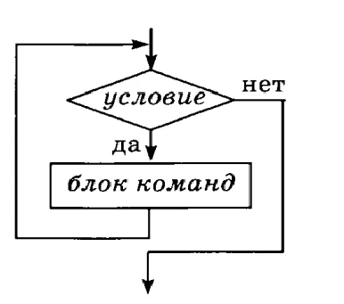

Вопрос 1
Развитие языков программирования.
Ответ: Первые программы были написаны на машинном языке, чтобы понимать данный язык был придуман ассемблер. Его роль заключалась в переводе машинного языка. Далее придумали трансляторы . Транслятор – это спец. ПО которое переводит код ЯП в машинный .
Вопрос 2
Области применения языков программирования.
Ответ:
- Python – ИИ, сортировка больших объемов данных. Django – web
- Kotlin – разработка мобильных приложений
- Swift – разработка мобильных приложений под IOS
- PHP – серверный язык. Без него невозможна регистрация на сайте
- С – написание драйверов
Вопрос 3
Компиляторы и интерпретаторы.
Ответ:Главное различие компилятора от интерпретатора в том, что компилятор сразу переводит код в машинный язык, а интерпретатор делает это построчно .
Пример компилируемых ЯП: С, С++
Пример интерпретируемых ЯП: python, pascal
Вопрос 4
Жизненный цикл программы. Программный продукт и его характеристики
Ответ:В разработке
Вопрос 5
Основные этапы решения задач на компьютере.
- Постановка задач
- Математические расчеты
- Составление алгоритмы
- Переводод на программный язык
- Тестирование
Вопрос 6
Типы данных. Определение переменной.
Ответ: Типы данных в python
- Integer - целочисленный тип
- Float - число с плавающей точкой
- String - строка
- Bool - логический тип(True, False)
Пример опеределения переменной: a = 'Python'
Вопрос 7
Операции и выражения. Правила формирования и вычисления выражений. Структура программы
Ответ:Операции в python: *-умножить,/-делить,**-возведение в степень, % - остаток от делениея, // - целочисленное деление, + - сложить, "-" - вычесть
Правила формирования:
- Переменная состоит из букв латинсокго алфавита
- Не может начинаться с цифры
- Переменные чувствительны к регистру
Cтруктура программы: Любая Python-программа состоит из последовательности лексем (допустимых символов), записанных в определенном порядке и по определенным правилам
Лексемы включают в себя:
- комментарии
- литералы
- знаки пунктуации;
- идентификаторы;
- ключевые слова.
Вопрос 8
Ввод и вывод данных. Оператор присваивания. Комментарии.
Ответ: Для ввода данных используется служебное слово "input()", для вывода "print()", оператор присваивания "=", комментарии "#"
Вопрос 9
Условный оператор. Реализация оператора выбора через множественные условия.
Ответ: Услованый оператор - это конструкция if : else:. Для Реализации множественных условий используется elif
Вопрос 10
Цикл с параметром
Ответ:Рассказать про цикл for
Вопрос 11
Цикл с предусловием
Ответ:Цикл с предусловием — цикл, который выполняется, пока истинно некоторое условие, указанное перед его началом. Это условие проверяется до выполнения тела цикла, поэтому тело может быть не выполнено ни разу (если условие с самого начала ложно).
Вопрос 12
Цикл с постусловием.
Ответ: Рассказать про цикл While
Вопрос 13
Вложенные циклы.
Ответ:Вложенные циклы – это циклы, организованные в теле другого цикла. Вложенный цикл в тело другого цикла, называется внутренним циклом.
Вопрос 14
Строки. Стандартные процедуры и функции для работы со строками.
Ответ:Строка в Python - это обычная последовательность символов (букв, цифр, знаков препинания).
Cтроки можно:
- Дублировать ( 'python' *3)
- Складывать ('python'+'3')
- Обращаться по индексу (P[0] (P- строка))
- Узнать длину строки len(P (p-строка))
Вопрос 15
Списки (массивы). Методы списков.
Ответ: Список - это непрерывная динамическая коллекция элементов. Каждому элементу списка присваивается порядковый номер - его индекс
Методы списков
- .append() - добавляет элемнеты в список
- .reverse() - переворачивает список
- .clear() - копирует список
- .copy() - копирует список
- ist.insert(i, x) - вставляет элмент x на позицию i
Вопрос 16
Структурированный тип данных – словарь. Операции над словарями python
Ответ: Словари в Python - неупорядоченные коллекции произвольных объектов с доступом по ключу.
Методы словаря
- .clear() - очищает словарь.
- .copy() - возвращает копию словаря.
- .items() - возвращает пары (ключ, значение).
- .keys() - возвращает ключи в словаре.
Вопрос 17
Функции работы с файлами
Ответ:
Примеры работы с файлами
- F = open('имя файла','как открыть файл(r,w,r+)')
- a = F.read()-чтение файла
- a = f.write()-запись в файл
- f.close() -закрытие файла
Вопрос 18
Определение и вызов подпрограмм. Пользовательские функции
Ответ: Чтобы создать функцию нужно написать def 'имя функции'()
Для вызова функции используем 'имя функции'()
Чтобы импортировать Пользовательскую функцию пишем from 'имя модуля' import 'имя функции'
Вопрос 19
Рекурсия. Программирование рекурсивных алгоритмов. Применение рекурсивных функций.
Ответ: Рекурсия - это функция вызывающая сама себя
Есть 2 типа рекурсий. 1.Прямая( это когда функция вызывает сама себя через себя)
2. Косвенная это когда вызов функии происходит через другую функцию
Применение: для поиска факториала
Ответ: Чтобы создать функцию нужно написать def 'имя функции'()
Для вызова функции используем 'имя функции'()
Чтобы импортировать Пользовательскую функцию пишем from 'имя модуля' import 'имя функции'
Вопрос 20
Модели программирования (парадигмы).
Ответ: 1. Процедурная. Суть заключается в том, что сложная задача делится на несколько простых, а те ещё на несколько мелких задач
2. Объектно-ориентированное программирование- это парадигма, в которой основными концепциями являются понятия объекта и класса
Вопрос 21
Основные принципы ООП:объект, свойства, методы, класс. питон
Ответ: 1. Класс — представляет собой шаблон для создания объектов, обеспечивающий начальные значения состояний
2.Объект - это экземпляр класса.
.Метод — это функция или процедура, принадлежащая какому-то классу или объекту
4.Свойства классов устанавливаются с помощью простого присваивания<